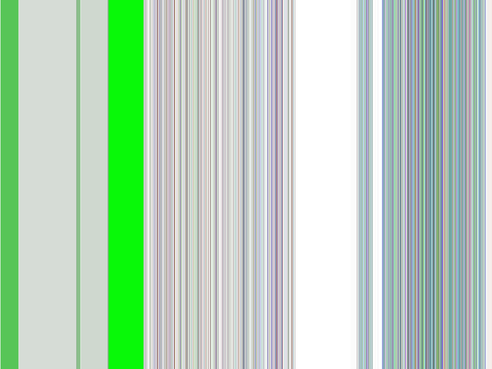

Accepted Manuscript
Regional sensory and chemical characteristics of Malbec wines from Mendoza and California
Ellena S. King, Martha Stoumen, Fernando Buscema, Anna K. Hjelmeland, Susan E. Ebeler, Hildegarde Heymann, Roger B. Boulton
PII: S0308-8146(13)01014-5
DOI: http://dx.doi.org/10.1016/j.foodchem.2013.07.085
Reference: FOCH 14430
To appear in: Food Chemistry
Received Date: 22 April 2013
Revised Date: 10 July 2013
Accepted Date: 18 July 2013
Please cite this article as: King, E.S., Stoumen, M., Buscema, F., Hjelmeland, A.K., Ebeler, S.E., Heymann, H., Boulton, R.B., Regional sensory and chemical characteristics of Malbec wines from Mendoza and California, Food Chemistry (2013), doi: http://dx.doi.org/10.1016/j.foodchem.2013.07.085
This is a PDF file of an unedited manuscript that has been accepted for publication. As a service to our customers we are providing this early version of the manuscript. The manuscript will undergo copyediting, typesetting, and review of the resulting proof before it is published in its final form. Please note that during the production process errors may be discovered which could affect the content, and all legal disclaimers that apply to the journal pertain.
Regional sensory and chemical characteristics of Malbec wines from Mendoza and California
Ellena S King1, Martha Stoumen1, Fernando Buscema1,2, Anna K. Hjelmeland1, Susan E. Ebeler1,

Hildegarde Heymann1,*, Roger B. Boulton1
1 Department of Viticulture & Enology, The University of California, Davis, One Shields Ave, Davis CA
5 95616-5270, USA.
2 Catena Institute of Wine, J. Cobos s/n, Agrelo, Luján de Cuyo, Mendoza, Argentina
*Corresponding author. Tel.: +1 5307544816; fax: +1 5307520382. E-mail address:
hheymann@ucdavis.edu (H. Heymann). 9
ABSTRACT

Malbec grapes are widely grown and studied in Argentina, whereas the smaller production in
California is less well known. This study sought to define and compare Malbec wine compositions
from various regions in Mendoza, Argentina and California, USA. The Malbec wines were clearly
separated, based on their chemical and sensory profiles, by wine region and country. Descriptors of
Malbec wines were aromas of cooked vegetal, earthy, soy and volatile acidity, as well as acidic taste
and astringent mouthfeel, regardless of the region of origin. Malbec wines from Mendoza generally
had more ripe fruit, sweetness, and higher alcohol levels, while the Californian Malbec wines had
more artificial fruit and citrus aromas, and bitter taste. Compositional differences between the two
countries were related more to altitude than precipitation and growing degree days. To our
knowledge, this is the first time that an extensive regionality study has been attempted for Malbec
wines.
23
Keywords:
Altitude
Climate
Descriptive sensory analysis
Gas chromatography
Volatile compounds
Wine provenance
1. Introduction

Vitis vinifera L. cv Malbec is a red grape variety, also known as Côt Noir or Auxerrois. It originated
in France, and is still grown in the Cahors and Bordeaux regions of France. It is the most widely
planted grape variety in Argentina, primarily in the Mendoza region, which, in 2011, accounted for
86% of all Argentinean Malbec plantings (Instituto Nacional De Vitivinicultura, 2012). Some of
Argentina’s more highly rated Malbec wines originate in Mendoza’s high altitude wine regions: Luján
de Cuyo and the Uco Valley, located in the foothills of the Andes Mountains between 800 and 1600
m elevation. Malbec is also grown in Chile, Australia and the United States. In the US, Malbec is
mainly planted in California and Washington State. California accounted for approximately 84% of
total US Malbec production in 2011, although Malbec accounted for only 0.5% of all red wine grape
production in California (USDA, 2012). Within the last decade, growth of Argentinean Malbec
imports to the US has gone from being relatively non-existent at 50,000 cases in 2000 to exceeding
1.4 million cases in 2009 (Shanken, 2010). With high consumer demand, and low levels of domestic
US production, one might ask, how do the flavour profiles of Californian Malbec wines compare to
those of Mendoza, Argentina?
Regionality, “terroir” or typicality in wine is difficult to define and even more difficult to study. It
is the unique characteristics that the geography, geology and climate of a certain place bestow upon
a wine. It can provide recognition of a style specific to an area, in a representative wine sample. The
region of origin is an important decision-making factor often used by knowledgeable wine
consumers when purchasing wine (Famularo, Bruwer, & Li, 2010). However, viticultural and
oenological decisions made during the production process are likely to influence both the wine style
and the characteristics imparted by the place of origin. Thus, research into wine regionality requires
minimal viticultural and winemaking interventions, such as no oak contact.
include Cabernet Sauvignon from Australia (Robinson, Adams, Boss, Heymann, Solomon, &
Trengove, 2012), from China (Tao, Liu, & Li, 2009) and from France (Cadot, Caillé, Thiollet-Scholtus,

Samson, Barbeau, & Cheynier, 2012), Bobal from Spain (Garcia-Carpintero, Sanchez-Palomo, Gallego,
& Gonzalez-Vinas, 2012) and Moravia Agria from Spain (Garcia-Carpintero, Sanchez-Palomo, Gallego,
& Gonzalez-Vinas, 2011), to name a few. A smaller number of studies have compared the sensory
profiles of wines from multiple countries, including red wines from Australia and China (Williamson,
Robichaud, & Francis, 2012), and Sauvignon Blanc wines from France, New Zealand and either
Austria (Green, Parr, Breitmeyer, Valentin, & Sherlock, 2011) or South Africa (Lund, Thompson,
Benkwitz, Wohler, Triggs, Gardner, et al., 2009). However, all of these studies compared commercial
wines that were made using different production methods, making it difficult to determine specific
sensory characteristics unique to the region of origin.
The regionality of Malbec wines has been studied using the phenolic composition (Fanzone,
Peña-Neira, Jofré, Assof, & Zamora, 2010; Fanzone, Zamora, Jofré, Assof, Gómez-Cordovés, & Peña-
Neira, 2012; González, et al., 2009) and elemental composition from soils to determine wine
provenance in Argentina (Di Paola-Naranjo, et al., 2011; Fabani, Arrúa, Vázquez, Diaz, Baroni, &
Wunderlin, 2010). Two studies have investigated regional sensory differences of Malbec wines.
Goldner and Zamora (2007) analyzed 56 “non-commercial” Malbec wines (tank sampled, unoaked,
no malolactic fermentation) from seven viticultural regions in Argentina. The authors found clear
sensory differences among the Malbec wines produced in the different regions. Another study by
Aruani, Quini, Ortiz, Videla, Murgo, and Prieto (2012) investigated the regional characteristics of 32
commercial Malbec wines from eight Argentinean wine regions. All the wines were tank-fermented
with no oak aging. Again, the study showed significant sensory differences among the Malbec wines,
with some of the wine regions grouped due to close proximity or similar climatic conditions. To our
knowledge only one study has related the chemical composition of Malbec wines to their sensory
properties (Goldner, Zamora, Di Leo Lira, Gianninoto, & Bandoni, 2009). In this study, 17 volatile
sweet/spicy, citrus, floral, and cooked/raisin, which were found to be important sensory attributes
of Argentinian Malbec wines.

The majority of studies on regional differences of Malbec wines have mainly focused on
Argentina, due to strong commercial interests and high levels of investment in the production of
single-varietal Argentinean Malbec wines. However, with greater consumer recognition and interest
in Malbec wines, it is important to study this grape cultivar on a broader scale. The objectives of this
study were to define and compare the regional sensory and chemical characteristics of Malbec wines
from two countries. Malbec wines from Mendoza, Argentina and California, USA were vinified to
preserve site-specific characteristics, and then analysed to determine their volatile aroma
compositions and sensory profiles. Additionally, because this study analyzes Malbec wines from
broadly varied international regions, climate and topographical data were included to investigate
how Malbec wine compositions differ among regions as a result of some environmental factors.
94
2. Materials and methods
2.1. Malbec viticultural sites
2.1.1. Viticultural site selection
‒
Forty-one different Malbec wines were evaluated in this study, made from fruit originating from
41 different viticultural sites. All wines were made in the 2011 vintage. Within-vineyard variability
100
was limited, to insure fruit quality and consistency. From each viticultural site, 450-kg uniform lots
101
were hand harvested when fruit reached a target 24
25 °Brix and lacked herbaceous character. Due
102
to harvest logistics, some viticultural sites were harvested with soluble solids content outside the
103
target Brix range; however, the average sugar level at harvest of all Malbec grapes was 24.4 ± 1.73
104
°Brix. After harvest, fruit was immediately transported to the winery for processing.
106
Luján de Cuyo (referred to as Luján), Maipú, Tupungato and San Carlos. The latter two regions are
107
within the Uco Valley. An additional 15 viticultural sites were chosen within California, USA from five

108
wine regions: Lodi, Monterey, Napa, Sonoma and Yolo County (referred to as Yolo, this is not a
109
recognised American viticultural area [AVA]). As an aside, one viticultural site was located in Lake,
110
Red Hills District; however, due to close geographical proximity, it was combined with the Sonoma
111
wine region. The number of viticultural sites sampled from each wine region are shown in Table 1.
112
2.1.2. Climate data
113
Growing degree day and precipitation data for each wine region were calculated to compare with
114
the wine composition data. Growing degree days were calculated using monthly averages (in
115
degrees Celsius) for the given periods and a base of 10 °C (Jones, Duff, Hall, & Myers, 2010) and
116
precipitation was calculated as the sum of the monthly totals (in millimetres) for the given periods.
117
For the Mendoza wine regions, growing degree days and precipitation were calculated using DACC
118
(2013) from October 2010 to April 2011. Climate data for some viticultural sites were not available;
119
however, at least one station within all four Mendoza wine regions had accessible information that
120
was generalised for all viticultural sites within that region. For the Californian wine regions, growing
121
degree days and precipitation were calculated using CIMIS (2009) from April to October 2011. The
122
majority of viticultural sites in California were represented by at least one station and had accessible
123
information.
124
Malbec winemaking procedure
125
The 26 Mendoza Malbec wines were fermented and bottled in duplicate at the Catena Institute
126
of Wine in Mendoza, Argentina in March and April 2011 solely for the purpose of this study. The 15
127
Californian Malbec wines were made in triplicate at the Pilot Winery, University of California, Davis
128
from September to October 2011 solely for this study. A standard winemaking procedure was used
129
for all Mendoza and Californian Malbec wines. Initially, Malbec grapes were destemmed and
131
250-L stainless steel vessels (500-L for Mendoza wines) with the addition of 100 mg/L of
132
diammonium phosphate and 200 mg/L EC-118 yeast (Lalvin, Scott Laboratories, Inc., Petaluma, CA

133
[Californian Malbec wines]; Lallemand América Latina, Mendoza, Argentina [Mendoza Malbec
134
wines]). Fermentations were temperature controlled at 22
25 °C with daily pump overs (punch-
135
downs for Mendoza Malbec wines). Residual sugar levels were checked at the end of fermentation
136
using a Clinitest (Bayer Corp., Pittsburgh, PA) and Malbec wines were considered dry when levels
137
were less than 2 g/L. All Malbec wines remained on skins for a total of 11 days, to standardise skin
138
contact time, after which time the free-run was syphoned into stainless steel containers. The Malbec
139
wines were inoculated with 100 mg/L VP41 malolactic bacteria (Lalvin, Scott Laboratories, Inc.,
140
Petaluma, CA [Californian Malbec wines]; Lallemand América Latina, Mendoza, Argentina [Mendoza
141
Malbec wines]), and when malic acid levels were less than 0.2 g/L, potassium metabisulfite was
142
added to obtain 35 mg/L free SO2. The Malbec wines were chilled to 10 °C for 2 weeks, before being
143
racked off lees and bottled under nitrogen in 750-mL dark glass bottles with tin screw cap (Federfin
144
Tech S.R.L., Tromello, Italy). All Malbec wines were made without oak contact, acid addition or
145
filtration. The Malbec wines made in Mendoza, Argentina were shipped in insulated containers to
146
California after bottling, and similar to the Californian Malbec wines, were analysed within one year
147
of bottling. During this time, wines were stored upright at 16.5 ± 0.2 °C.
148
Chemical analyses
149
Volatile aroma composition
150
All Malbec wines, including fermentation replicates, were analysed in triplicate for volatile aroma
151
composition, using a semi-quantitative, automated headspace solid-phase microextraction (HS-
152
SPME) gas chromatography-mass spectrometry (GC-MS) method combined with synchronous
153
Selected Ion Monitoring (SIM)/scan detection developed by Hjelmeland, King, Ebeler, and Heymann
154
(2013). Sixty volatile aroma compounds were measured, representing important aroma compounds
156
and Dornfelder (Campo, Ferreira, Escudero, Marques, & Cacho, 2006; Fabani, Ravera, & Wunderlin,
157
2013; Fang & Qian, 2005; Frank, Wollmann, Schieberle, & Hofmann, 2011; Goldner, et al., 2009;

158
Gürbüz, Rouseff, & Rouseff, 2006; Kotseridis & Baumes, 2000; Kotseridis, Razungles, Bertrand, &
159
Baumes, 2000). All 17 aroma compounds previously measured in Argentinean Malbec wines
160
(Goldner, et al., 2009) were measured in the current study, with the exception of diethyl succinate,
161
1-pentanol, 2-methyl-1-butanol, and toluene.The compounds measured have also been shown to
162
contribute generally to aroma attributes in red wines, such as berry fruit (ethyl and acetate esters),
163
vegetal (C6 alcohols; NOTE: IBMP has not been found in Malbec wines (Koch, Doyle, Matthews,
164
Williams, & Ebeler, 2010)), sweet-caramel (phenyl acetaldehyde, ethyl cinnamate, linalool), phenolic
165
(guiacol, etc.) and woody (whiskey lactone) (Escudero, Campo, Fariña, Chacho, & Ferreira, 2007). A
166
complete list of the volatile aroma compounds measured, the calculated retention indices and SIM
167
qualifying ions are given in Table 2.
168
In summary, 10 mL of wine sample were combined with 3 g NaCl and 50 μg/L 2-undecanone (as
169
internal standard) in a glass vial with magnetic crimp caps (Supelco, Bellefonte, PA). A 2-cm
170
divinylbenzene/Carboxen/polydimethylsiloxane (DVB/CAR/PDMS) (Supelco), 23 gauge SPME fibre
171
was used for sampling, with samples exposed to the fibre for 30 min at 40 °C with agitation. A DB-
172
Wax (polyethylene glycol) capillary column (30 m, 0.25 mm I.D., 0.25 μm film thickness) (J&W
173
Scientific, Folsom, CA) and SPME inlet liner (0.7 mm i.d.; Supleco) were used. During analysis, the
174
oven was kept at 40 °C for 5 min, then increased at 3 °C/min up to 180 °C, and then 30 °C/minute up
175
to 240 °C, before holding for 10 min. The MSD interface and inlet temperature were held at 240 °C,
176
and the SPME fibre was desorbed in split mode with a 20:1 spit ratio. Electron ionisation source was
177
used, with a source temperature of 230 °C and electron energy of 70 eV. The samples were analysed
178
using a 6890 gas chromatograph coupled to a 5975 MSD (Agilent Technologies, Santa Clara, CA),
179
equipped with an MPS2 autosampler (Gerstel, Linthicum, MD). The instrument was controlled by
181
(E.01.01.335, Agilent Technologies).

182
Standard chemical parameters
183
Standard chemical parameters, including pH, titratable acidity (TA), ethanol and volatile acidity
184
(VA) were measured in the Malbec wines. TA and pH were measured with a Mettler Toledo DL50
185
autotitrator (Columbus, OH). VA was measured using the Flex-ReagentTM Acetic Acid Enzymatic Kit
186
(Unitech Scientific, Lakewood, CA) and ethanol was measured using an Anton Paar Alcolyzer (Anton
187
Paar GmbH, Gerlingen, Germany). The sugar levels in the Malbec grapes at harvest were measured
188
using a refractometer (ThermoFisher Scientific, Waltham, MA). All measurements were made in
189
triplicate.
190
Descriptive sensory analyses
191
The sensory profiles of the Malbec wines from Mendoza and California were analysed
192
approximately three months after bottling, in two descriptive sensory analyses (DA) performed in
193
the wine sensory laboratory, University of California, Davis. Malbec wines from Mendoza were
194
analysed in October 2011, and the Malbec wines from California were analysed in March 2012. One
195
fermentation replicate of each viticultural site was randomly selected and used for the descriptive
196
sensory analysis, totalling 26 wines from Mendoza and 15 wines from California.
197
Panelists were recruited through advertising within the University. For the Mendoza Malbec
198
wines, a total of 15 panellists (5 females) participated, ranging in age from 21 to 69 years, many with
199
prior wine descriptive analysis experience. For the Californian Malbec wines, 14 panellists (5
200
females) were recruited, ranging in age from 21 to 70 years, many with prior experience in wine
201
descriptive analysis. Some panellists participated in both descriptive analyses, but were not given
202
information about the study beforehand. This project was approved by the Institutional Review
203
Board of the University of California, Davis.
205
one-hour sessions over approximately two weeks for attribute generation, discussion and
206
consensus, scale use and reference standards. Both descriptive analysis panels chose to rate 23

207
attributes on a 15-cm unstructured line scale anchored by wordings of “low” and “high”. The
208
Mendoza Malbec wine panel rated 16 aroma, four taste and three mouthfeel descriptors, while the
209
Californian Malbec wine panel rated 17 aroma, four taste and two mouthfeel descriptors. See Table
210
3 for details of the attributes and reference standards used in both descriptive sensory analyses.
211
Both descriptive analyses had similar experimental designs. Panellists evaluated wines during 12
212
sessions over approximately three weeks. Wines were presented in triplicate, in a randomised
213
complete block design, with six or seven wines per session. All sensory data were collected using
214
FIZZ software (Version 2.00L, Biosystèmes, Couternon, France). Evaluation occurred in isolated,
215
ventilated sensory booths under red lights, to eliminate biases attributed to possible colour
216
differences. Wine samples (30 mL) were presented in standard black tasting glasses (ISO-3591, 1977)
217
covered with plastic lids and identified by random three digit codes. Water and unsalted crackers
218
were provided as palate cleansers and all samples were expectorated. Food was available for
219
panellists at the end of each tasting session.
220
Data analysis
221
For the volatile aroma composition, peaks were quantified relative to the internal standard (2-
222
undecanone) using the peak area of an extracted ion. The chemical data were analysed using two-
223
way analyses of variance (ANOVAs) with main effects of region and fermentation replicate.
224
During the descriptive sensory analyses, one panellist in the Californian Malbec wine panel
225
missed one session. The missing values were imput using the assessor’s mean replicate values. For
226
the results of each descriptive sensory analysis, ANOVAs measuring the effects of region and wine
227
nested within region were performed. Variance was assessed using Fisher’s LSD means comparison.
229
attributes (indicated in Table 3) and standardised to mean zero for each sensory attribute within
230
each descriptive analysis. The combined, standardised sensory data were analysed for differences

231
among regions using ANOVA and related to chemical data using generalised Procrustes analysis
232
(GPA) by Gower method. Average data points for each country were calculated using the mean
233
Euclidean distance in the GPA product space. The environmental data of wine regions were also
234
added into the GPA product space as supplementary vectors using regression. Pairwise correlations
235
were also used to relate the chemical and sensory data, as well as the environmental data. JMP
236
(Version 9.0, SAS Institute, Cary, NC), SAS (Version 9.2, SAS Institute, Cary, NC) and XLSTAT (Version
237
238
2009.3.01 Addinsoft, New York, NY) software were used for all data analyses.
239
Results and discussion
240
Differences between viticultural sites in Mendoza and California
241
Details on the viticultural sites, including altitude, year of planting, rootstock, vine spacing,
242
irrigation method, trellising system and pruning techniques within each wine region are shown in
243
Table 1. The Malbec vines in Mendoza were much older (on average, planted in 1967 ± standard
244
deviation of 28 years) than the Malbec vines in California (on average, planted in 2000 ± 3 years) and
245
were also own-rooted, as opposed to California, where all Malbec vines were planted on rootstocks,
246
particularly Freedom, 99R, 110R, 5C, 3309C and 101-14 Mgt (Table 1), mainly to combat phylloxera.
247
Apart from two viticultural sites in Napa and Sonoma, the majority of Malbec vines planted in
248
California had larger spacing than those in Mendoza (Table 1). The majority of viticultural sites in
249
Mendoza were flood irrigated, compared with drip irrigation in California (Table 1). Malbec vines in
250
Mendoza had vertical shoot position (VSP) trellising and were generally cane pruned, with the
251
exception of some sites in San Carlos (Table 1). In contrast, in California, Malbec vines generally had
253
spur pruning, with one viticultural site in Sonoma using cane pruning, and another in Monterey using
254
box hedging. (Table 1).

255
As an aside, the average reported price of Malbec grapes purchased in 2012 was significantly
256
higher in California (approximately US$1156/ton) (USDA, 2012) compared with Argentina
257
(approximately US$8201/ton) (Fundación Instituto de Desarrollo Rural, 2012). No information was
258
available on regional differences in price for Malbec wines in Mendoza or California. This is not a
259
direct comparison between countries, as it does not take into account differences, such as the cost
260
of living. It is also not necessarily an indication of relative differences in bottle price for Malbec wines
261
from Argentina and the US.
262
The reported differences in the viticultural sites within each wine region (Table 1) highlight a few
263
of the aspects that comprise regionality, and some important reasons why wines differ based on
264
their place of origin. Other differences in natural site aspects include soil type, slope angle and
265
direction, surrounding topography, proximity to a body of water, humidity and daylight hours; not to
266
mention differences among viticultural sites based on production interventions, such as use of
267
fertilisers and pesticides, mid-row cover, tillage, use of netting, and type and amount of irrigation
268
water.
269
All of these different aspects contribute to specific regional characteristics. It is almost impossible
270
to measure each of these aspects, and even more difficult to standardise them for a research
271
experiment. Instead, this study attempted to maintain site-specific characteristics through minimal
272
winemaking intervention and investigate differences in composition of Malbec wines from various
273
regions in Mendoza, Argentina and California, USA. Three environmental factors were used to relate
274
the regional differences in Malbec wines: altitude, growing degree days and precipitation.
1
Converted using an exchange rate of 5 pesos per US$.
276
fewer growing degree days in California (on average, 1538 ± standard deviation of 343 degrees)
277
compared with Mendoza (on average, 1646 ± 97 degrees), and less precipitation in California over

278
the growing period (on average, 104 ± 59 mm) compared with Mendoza (on average, 147 ± 44 mm).
279
The difference in precipitation is perhaps due to the proximity of the Mendoza province in Argentina
280
to the Andes Mountains. This is indicated by the differences in altitude, with the viticultural sites in
281
Mendoza, Argentina located at much higher elevations (on average, 1103 m ± 133 m above sea
282
level), than those in California (on average, 190 m ± 200 m above sea level).
283
Chemical analyses
284
Volatile aroma profile
285
Sixty volatile aroma compounds were measured using a targeted profiling HS-SPME-GC-MS method.
286
The following volatile aroma compounds were not detected in any of the Malbec wines analysed:
287
geraniol, trans-ethyl cinnamate, 4-vinylguaiacol, γ-decalactone, γ-dodecalactone, guaiacol, 4-
288
ethylguaiacol, furfural, 4-methylfurfural, 5-methylfurfural, cis-oak lactone and trans-oak lactone
289
(Table 2). The first four compounds were also not detected in Cabernet Sauvignon wines by
290
Hjelmeland, et al. (2013) using the same GC-MS method; the latter compounds are oak-derived, and
291
thus it is not surprising that they were not detected in the unoaked Malbec wines.
292
The results of the ANOVA measuring the effects of region and fermentation replicate are shown
293
in Table 2. Based on the ANOVAs, the remaining 49 volatile aroma compounds were significantly
294
different (p < 0.05) between the wine regions, except isoamyl alcohol. Only one volatile aroma
295
compound was significantly different (p < 0.05) between the fermentation replicates of the Malbec
296
wines, ß-ionone. This indicates that the fermentation replicates did not differ substantially in their
297
chemical compositions. For this reason, one replicate of each wine was randomly selected for
298
further sensory and chemical analyses.
300
Based on an ANOVA, there were significant differences (p < 0.05) in the standard chemical

301
parameters between the wine regions (data not shown). The alcohol levels of the Malbec wines
302
from Mendoza were significantly higher (on average, 15.6 ± standard deviation of 1.1%v/v) than the
303
wines from California (on average, 14.1 ± 0.9%v/v). In California, alcohol levels were lowest in
304
Sonoma and Monterey (on average, less than 14%v/v), and highest in Lodi and Yolo, with one wine
305
from Yolo over 16%v/v. In Mendoza, Luján had the lowest alcohol levels, and Maipú and Tupungato
306
the highest alcohol levels (on average, over 16%v/v), with three Malbec wines greater than 17%v/v.
307
The sugar levels in the Malbec grapes at harvest were significantly higher in the Mendoza wine
308
regions (on average, 25.7 ± 1.2 °Brix) than the Californian wine regions (on average, 23.7 ± 1.6 °Brix).
309
As expected, there was a strong positive correlation between the sugar levels at harvest and ethanol
310
levels in the wine (r > 0.75, p < 0.05).
311
Californian Malbec wines were significantly higher in pH values (on average, 4.02 ± standard
312
deviation of 1.08) than the Mendoza Malbec wines (on average, 3.76 ± 1.08), and conversely,
313
Californian Malbec wines had lower titratable acidity levels (on average, 4.85 ± 0.27 g/L of tartaric
314
acid) than the Mendoza Malbec wines (on average, 6.06 ± 0.65 g/L of tartaric acid). Of the wine
315
regions in California, the majority of Malbec wines from Yolo and Napa had high pH values, over 4.0.
316
For the Mendoza wine regions, pH values were highest in Tupungato, included three Malbec wines
317
with pH values of over 4.0. Malbec wines from Luján had the lowest titratable acidity levels, whereas
318
Maipú wines had the highest, although one Malbec wine from Tupungato had a titratable acidity
319
level of over 8.0 g/L. The Mendoza Malbec wines had the highest levels of volatile acidity (on
320
average, 0.51 ± 0.2 g/L of acetic acid), with two Malbec wines over 1.0 g/L, both from the San Carlos
321
region, compared with Malbec wines from California (on average, 0.39 ± 0.08 g/L of acetic acid).
322
3.3. Sensory data
324
Of the 16 aroma attributes, and seven taste and mouthfeel attributes, eight attributes were

325
significantly different (p < 0.05) among the 26 Mendoza Malbec wines. An additional sensory
326
attribute was significantly different among the wines at a p < 0.07 level, earthy/mushroom aroma.
327
Mendoza Malbec wines were characterised by differences in red fruit aroma, dried fruit aroma,
328
cooked vegetal aroma, chocolate aroma, earthy/mushroom aroma, soy aroma, VA/oxidised aroma,
329
acidic taste and astringent mouthfeel, regardless of the region of origin.
330
When differences in the sensory profiles of the Mendoza Malbec wines were assessed by region,
331
six attributes were significantly different (p < 0.05): cooked vegetal aroma, earthy/mushroom aroma,
332
chocolate aroma, VA/oxidised aroma, sweet taste and hot mouthfeel. The average values of all
333
sensory attributes for the four Mendoza wine regions are shown in Table 4.
334
Malbec wines from Tupungato were rated highest in cooked vegetal, earthy/mushroom and soy
335
aromas, and sweet taste, and rated lowest in VA/oxidised and chocolate aromas (Table 4). San Carlos
336
wines were rated highest in dried fruit, chocolate and VA/oxidised aromas, and lowest in
337
earthy/mushroom aroma (Table 4). The Malbec wines from Maipú had the highest ratings for red
338
fruit aroma, and sweet and acidic tastes, as well as hot mouthfeel, and lowest ratings for dried fruit
339
aroma and astringent mouthfeel (Table 4). In contrast, Luján Malbec wines were rated lowest in
340
cooked vegetal and soy aromas, as well as sweet and acidic tastes, and hot mouthfeel (Table 4).
341
Among previous studies characterising the sensory profiles of Argentinean Malbec wines, there
342
were large differences in the results, possibly due to differences in winemaking techniques and the
343
broadness of the sample set studied. Aruani, et al. (2012) found that Malbec wines from Luján were
344
high in plum and floral aroma and flavour, while Valle de Uco (which includes Tupungato and San
345
Carlos) were high in red fruit aroma and astringency. Goldner and Zamora (2007) showed that
346
Malbec wines from Luján and Maipú (in Alto Río Mendoza) were characterised by pungency, sweet
348
raisin, floral and sweetness. The descriptors used to characterize the Malbec wines from Valle de
349
Uco by Goldner and Zamora (2007) are similar to those used in this study to describe San Carlos

350
Malbec wines, particularly the cooked fruit and raisin attributes (in this case, dried fruit aroma), and
351
the Tupungato Malbec wines, particularly the sweet taste.
352
Of note, salty taste was a descriptor of the Malbec wines from Mendoza. Although it was not
353
significantly different among the wines and regions, Maipú wines were rated slightly higher than
354
other regions for salty taste (Table 4). Salty taste is generally associated with grapes grown near the
355
ocean, however, the Mendoza province has no maritime influence. Alternatively, it is possible that
356
for grapes grown in saline soils, the resulting wines can possess a salty flavour, as was shown in Nero
357
D’Avola by Scacco et al. (2010). While this study does not have direct information regarding soil
358
composition of the specific viticultural sites studied, it may be a possible explanation for the salty
359
descriptor. Interestingly, Cavagnaro, Ponce, Guzman, and Cirrincione (2006) found that the Malbec
360
cultivar outperformed both Chardonnay and Cabernet when tested in vitro under various saline
361
conditions, and performed similarly to other Argentinean cultivars known for their salt tolerance.
362
3.3.2. Sensory profile of Malbec wines from California, USA
363
From an ANOVA of the sensory data, four of the twenty three sensory attributes were
364
significantly different (p < 0.05) among the Californian Malbec wines: cooked vegetal/cabbage,
365
VA/EA/SO2, bitter taste and astringent mouthfeel. From the ANOVAs testing for the effects of wine
366
region, six sensory attributes were significantly different (p < 0.05). These were artificial fruit aroma,
367
grapefruit/citrus aroma, cooked vegetal/cabbage aroma, VA/EA/SO2 aroma, sour taste and
368
astringent mouthfeel. Another two attributes were significantly different at p < 0.07 level,
369
soy/meaty/yeasty aroma and earthy aroma. The average values of the sensory attributes for the five
370
Californian wine regions are shown in Table 4.
372
highest ratings of artificial fruit and cooked vegetal aromas, and lowest ratings in sour taste and
373
astringent mouthfeel (Table 4). Wines from Monterey were highest in cooked vegetal aroma, as well

374
as VA/EA/SO2, soy/meaty/yeasty and earthy aromas, and lowest in grapefruit/citrus and artificial
375
fruit aromas (Table 4). Napa wines were also highest in VA/EA/SO2 aroma, as well as sour taste and
376
astringent mouthfeel, and lowest in earthy and soy/meaty/yeasty aromas, while Malbec wines from
377
Sonoma were lowest in soy, VA/EA/SO2 and cooked vegetal aromas (Table 4). To our knowledge, this
378
is the first time that the sensory profiles of Californian Malbec wines have been reported, except for
379
a thesis by one of the authors (M. Stoumen).
380
Relating the chemical and sensory data of the Malbec wines
381
The descriptive sensory data of the wines from Mendoza and California were standardised and
382
combined for the twenty shared attributes (indicated in Table 3). From an ANOVA of all standardised
383
sensory data, the region of origin differed significantly (p < 0.05) for cooked vegetal aroma, earthy
384
aroma, chocolate aroma, volatile acidity aroma, sweet taste, acidic taste, astringent mouthfeel and
385
viscous mouthfeel. A generalised Procrustes analysis (GPA) was used to compare the chemical and
386
standardised sensory data of all Malbec wines by wine regions, and the environmental data was
387
projected as supplementary variables into the product space. GPA is a powerful tool that enables
388
comparison of multiple datasets with different ranges through translation, rotation/reflection and
389
isotopic scaling (Gower & Dijksterhuis, 2004). The GPA biplot is shown in Figure 1, with the
390
significant sensory attributes for all wine regions indicated in bold. The GPA biplot is a spatial map;
391
sensory attributes and chemical compounds that are close to one another are positively correlated,
392
whereas, sensory attributes that are not close to any chemical compounds are not well explained by
393
the chemical data in the GPA biplot. Variables that are close to wine regions are higher in those
394
regions and variables on the outside edges of the biplot (not close to the central axis) are likely to
395
differentiate the wines more.
397
variance of the chemical data and 57% of the variance for the sensory data. The third dimension
398
explained an additional 8.2% of the total variance (1.5% of chemical variance and 17.2% of the

399
sensory variance; data not shown). There was some spatial separation of the Malbec wines by
400
country, as shown by the country average in Figure 1, with the Mendoza wine regions located on the
401
right side of the biplot, and the Californian wine regions spread on the left and upper sections of the
402
GPA biplot (Figure 1). Based on proximity in the GPA biplot (Figure 1), there were fewer chemical
403
and sensory differences between the San Carlos and Luján wine regions in Mendoza, and the Napa
404
and Sonoma wine regions in California, and similarly, between Tupungato in Mendoza, and Yolo in
405
California.
406
Cooked vegetal aroma was located in the bottom left quadrant of the GPA biplot (Figure 1), being
407
rated high in those Malbec wines on the left side of the biplot, as well as Tupungato wine region, and
408
lowest in the Sonoma and Luján wine regions. This attribute was positively associated with the
409
compounds located in the bottom left quadrant; of importance, hexanal and (Z)-3-hexen-1-ol.
410
Cooked vegetal aroma was positively correlated with earthy aroma in both descriptive analyses (r >
411
0.60, p < 0.05). Earthy aroma was rated high in Malbec wines from Monterey, Lodi, Tupungato and
412
Maipú, and rated low in the Napa and San Carlos wine regions, as evidenced by its location in the
413
bottom left quadrant of the GPA biplot (Figure 1). Earthy aroma was positively associated with those
414
compounds located in the same quadrant in the GPA biplot (Figure 1).
415
Volatile acidity aroma was located in the upper left quadrant of the GPA biplot (Figure 1), being
416
high in the Malbec wines from Monterey, Lodi, Napa and San Carlos, and rated low in the Sonoma
417
and Tupungato wine regions. In the descriptive sensory analysis of the Mendoza Malbec wines,
418
VA/oxidised aroma was correlated with measured volatile acidity (r = 0.40, p < 0.05), and was driven
419
by two Malbec wines from San Carlos with volatile acidity levels greater than 1.0 g/L (data not
420
shown). Whereas, in the descriptive analysis of the Californian Malbec wines, VA/EA/SO2 aroma was
422
are not evident in the GPA biplot (Figure 1), because that Procrustes analysis was conducted on the
423
combined sensory data for all Malbec wines. Chocolate aroma was rated high in Malbec wines from

424
San Carlos, Yolo and Sonoma, and rated low in Malbec wines from Lodi and Tupungato (Table 4). Its
425
location in the GPA biplot (Figure 1) near the central axis in the upper right quadrant indicates that it
426
was not well explained by the Procrustes analysis, as there were relatively few compounds
427
associated with chocolate aroma.
428
Acidic taste was rated high in Malbec wines from Napa, Maipú and Monterey, and rated low in
429
Malbec wines from Yolo and Luján (Table 4). As indicated by its position near the central axis in the
430
right side of the GPA biplot (Figure 1), acidic taste was also not well explained by the GPA (Figure 1),
431
although it was positively associated with titratable acidity (r > 0.45, p < 0.05), and negatively
432
associated with pH (r < -0.41, p < 0.05) in both descriptive analyses. Astringent mouthfeel was
433
located in the upper right quadrant of the GPA biplot (Figure 1), being rated high in Malbec wines
434
from Napa, Sonoma, Luján and San Carlos, and rated low in Malbec wines from Yolo and Lodi. Sweet
435
taste and viscous mouthfeel were rated high in Malbec wines from Yolo, Maipú and Tupungato, and
436
rated low in Malbec wines from Sonoma and Luján, as shown by their positions in the bottom of the
437
GPA biplot (Figure 1). Sweet taste was significantly different among the wine regions, although all
438
Malbec wines were dry after primary fermentation. It is most likely a combination of the correlative
439
relationships with ethanol (r > 0.43, p < 0.05) and pH (r > 0.60, p < 0.05) in both descriptive analyses.
440
Some of the sensory attributes that were not significantly different among the wine regions were
441
also related to volatile aroma compounds in the GPA biplot (Figure 1). For example, spice aroma,
442
located near the central axis in the upper right quadrant (Figure 1), was associated with eugenol and
443
4-methylguaiacol. Floral aroma, also in the upper right quadrant (Figure 1), was associated with
444
linalool, ß-damascenone, cis-linalool oxide and phenylethyl alcohol. Red fruit aroma, in the bottom
445
right quadrant (Figure 1), was associated with those volatile aroma compounds on the right side of
447
located in the same quadrant, was associated with measured ethanol levels.
448
Some sensory attributes were not well described by the GPA model (Figure 1). This may be
449
because the compounds responsible were not measured, or due to mixture effects. Many of the
450
sensory attributes studied here may be the result of interactions of multiple aroma compounds
451
acting in an additive or synergistic manner. For example, Pineau, Barbe, Van Leeuwen, and
452
Dubourdieu (2009) showed that although several ethyl esters in wines may be present at
453
concentrations below individual sensory thresholds, when combined together they contribute to
454
redberry and blackberry aromas in wines. These types of interactions would be difficult to discern by
455
the approach used in this study. Further work, including gas chromatograpy-olfactometry (GC-O) and
456
GC-recomposition-olfactometry (Johnson, Hirson, & Ebeler, 2012) may help to shed light on
457
important aroma interactions in Malbec wines.
458
There was large separation of the Malbec wines by taste and mouthfeel attributes, in particular,
459
astringent mouthfeel in the top right quadrant, and sweet taste and viscous mouthfeel at the
460
bottom of the GPA biplot (Figure 1). It is possible that some of the aroma attributes were less well
461
related to volatile compounds in the GPA biplot (Figure 1), due to the presence of these taste and
462
mouthfeel attributes. These attributes were included in the Procrustes analysis; however, as it is
463
important to present the overall sensory profiles of the Malbec wines from each wine region. It
464
would be interesting to measure the polyphenol content of the Malbec wines in this study, and
465
relate it to the taste and mouthfeel attributes from the descriptive sensory analysis. It would also be
466
interesting to investigate regional differences based on phenolics, as the phenolic content of
467
Mendoza Malbec wines has been shown to increase with elevation (Berli, D’Angelo, Cavagnaro,
468
Bottini, Wuilloud, & Silva, 2008) and cooler climates (González, et al., 2009; Vila, Paladino, Nazrala, &
469
Galiotti, 2009). All of the Malbec wines were rated relatively high in astringent mouthfeel. The
470
Californian Malbec wines also had high ratings of bitter taste. Malbec wines are generally considered
472
Argentina (Fanzone, et al., 2010; Fanzone, et al., 2012).

473
Based on the ANOVAs reported above, common descriptors that characterised the Malbec wines
474
from both Mendoza and California were: cooked vegetal aroma, earthy aroma, soy aroma, volatile
475
acidity aroma, acidic taste and astringent mouthfeel. Cooked vegetal aroma has not previously been
476
reported in Malbec wines; however, studies have described other green or vegetal characters in
477
Argentinean Malbec wines, including herbal or herby (Goldner, di Leo Lira, van Baren, & Bandoni,
478
2011; Goldner & Zamora, 2007; Goldner, et al., 2009) and bell pepper or sweet pepper (Aruani, et
479
al., 2012; Goldner, et al., 2011; Goldner & Zamora, 2007; Goldner, et al., 2009). It is interesting to
480
note that the majority of common aroma descriptors for the Malbec wines could be considered
481
savoury aromas. This may be one of the reasons that Malbec wines are often paired with red meat
482
(Matthews, 2011).
483
Based on the ANOVAs of the individual descriptive analyses, Mendoza Malbec wines were also
484
characterised by red fruit aroma, dry fruit aroma, chocolate aroma, sweet taste and hot mouthfeel,
485
whereas Californian Malbec wines were also characterised by artificial fruit aroma, grapefruit/citrus
486
aroma and bitter taste. In addition to the savoury aromas inherent in the Malbec wines, the
487
Mendoza wines were generally considered to have ripe fruit aromas and sweetness, while the
488
Californian Malbecs had more artiificial fruit and citrus aromas, and bitterness. The difference in hot
489
mouthfeel in the Mendoza Malbec wines is not surprising, as it was strongly correlated to ethanol
490
concentration (r = 0.88, p < 0.05), and alcohol levels were significantly higher in the Malbec wines
491
from Mendoza than from California.
492
Overall, more descriptors were used to differentiate the Malbec wines from Mendoza,
493
demonstrating an additional level of complexity in these wines, compared with the Californian
494
Malbec wines. Jancis Robinson made a similar observation, comparing Malbec wines from Argentina
495
and France. She characterized Argentinean Malbec wines by high levels of alcohol and fruit, with
497
considered thin (lacking palate structure) with animal-like qualities (Robinson, 2000). There was no
498
reference to Californian Malbec wines.

499
The environmental data were projected as supplementary variables into the GPA product space
500
(Figure 1). Altitude was located along the first dimension to the right of the GPA biplot (Figure 1),
501
which indicates that the countries were spatially separated by altitude. All the Mendoza wine
502
regions, on the right side of the G‒PA biplot (Figure 1) had significantly higher elevations than the
503
Californian wine regions on the left side, as shown in Table 1. Altitude was positively correlated with
504
titratable acidity (r = 0.92, p < 0.05), ethanol (r = 0.64, p < 0.05), volatile acidity (r = 0.56, p < 0.05)
505
and those volatile aroma compounds on the left hand side of the GPA biplot (Figure 1), and
506
negatively correlated with pH (r =
0.70, p < 0.05). The higher alcohol and volatile acidity levels in
507
high elevation wine regions may be due to a correlative relationship with longer ripening time,
508
although this does not explain the higher acidity levels in these wines. The sugar levels at harvest
509
were substantially higher for vineyards above 1200 m above sea level, all located in the Tupungato
510
wine region (data not shown).
‒
511
Altitude was moderately positively correlated with precipitation (r = 0.50, p < 0.05). Precipitation
512
was located in the upper right quadrant (Figure 1), being highest in Luján, San Carlos and Napa wine
513
regions. Precipitation was also positively correlated with titratable acidity (r = 0.74, p < 0.05) and
514
volatile acidity (r = 0.72, p < 0.05), and negatively correlated with pH (r =
, p < 0.05). It should
515
be noted that the precipitation rates used in this study do not take in to account when in the
516
growing season the rain occurred, and thus it is difficult to make comparisons between the wine
517
regions. Although precipitation is related to some of the chemical profiles for the Malbec wines
518
included in the study, it is likely that altitude of the viticultural sites had a larger effect on the wine
519
composition.
521
high in the Yolo, Lodi and Luján w‒ ine regions, and low in Monterey, Sonoma and some viticultural
522
sites in San Carlos (Table 1). For the combined sensory data, growing degree days was positively

523
associated with red fruit aroma (r = 0.53, p < 0.05), bitter taste (r = 0.70, p < 0.05) and pH (r = 0.60, p
524
< 0.05), and negatively correlated with earthy aroma (r =
, p < 0.05), sour taste (r =
0.72, p <
525
0.05) and titratable acidity (r =
0.45, p < 0.05). Thus, Malbec wines from hotter climates were
526
generally higher in red fruit aroma and pH, and lower in earthy aroma, sour taste and titratable
527
acidity. Grapes grown in hot climatic conditions have been shown to contain lower concentrations of
528
titratable acidity, higher pH levels and higher concentrations of monoterpenes (Ji & Dami, 2008), like
529
those related to red fruit aroma in the Malbec wines (Figure 1).
530
Research limitations
531
It should be noted that some of the wine regions studied consist of only a small number of
532
viticultural sites. Future studies should include replicating the experimental design of this study on a
533
larger scale, with a larger number of representative wines from each wine region, and conducting
534
the descriptive sensory analysis on all wines at the same time point. However, despite these
535
limitations, the standard techniques used in the harvesting and making of the Malbec wines, as
536
indicated by the similarities in volatile aroma composition of the fermentation replicates, provide a
537
538
useful methodology for examining regional variation in a grape cultivar grown in multiple locations.
539
Conclusions
540
The results of this study provide a definition and comparison of Malbec wines from Mendoza and
541
California. Regional differences in the sensory and volatile composition exist among the Malbec
542
wines, with larger separation between countries. The sensory profiles of the Mendoza Malbec wines
543
were more complex than the Californian Malbec wines, suggesting that there is scope for
545
a vocabulary to describe Malbec wines and a better understanding of their position in the
546
international Malbec wine market.

547
There were similarities among the sensory profiles of the Malbec wines regardless of the region
548
of origin, indicating some inherent qualities in the grape variety. This is the first time that an
549
extensive regionality study has been attempted for Malbec wines made in two countries from 15
550
different wine regions. The results of this study expand our current knowledge of Malbec wines and
551
the contribution of regional characteristics to the composition of wine. This study also provides the
552
framework to investigate regional differences, relate them to composition information and to
553
provide further insight about the influence of environmental factors on grape quality.
554
Acknowledgements
555
We would like to recognize the generosity of the Catena Zapata family, and the vineyard owners
556
and winemakers in the United States who contributed to this project. Thank you to all the sensory
557
panelists and to Kevin Scott and the UC Davis wine sensory team for their help with the sensory
558
analyses. Thank you also to Bret Hogan, Christine Wilson, Cary Doyle and the UC Davis flavor
559
chemistry team for their help with the chemical analyses, and Prof Gregory Jones for his help with
560
the climate data. A special mention also to Chik Brenneman and Paul Green for their winemaking
561
562
services in the pilot winery, UC Davis.
563
References
564
565
566
567
568
569
Aruani, A. C., Quini, C. I., Ortiz, H., Videla, R., Murgo, M., & Prieto, S. (2012). Argentinean commercial Malbec wines: Regional sensory profiles. Observatorio Vitivinicola Argentino, 10, 1-9.
Berli, F., D’Angelo, J., Cavagnaro, B., Bottini, R., Wuilloud, R., & Silva, M. F. (2008). Phenolic composition in grape (Vitis vinifera L. cv. Malbec) ripened with different solar UV-B radiation levels by capillary zone electrophoresis. Journal of Agricultural and Food Chemistry, 56, 2892- 2898.
570
571
572
573
574

575
576
577
578
579
580
581
582
583
584
585
586
587
588
589
590
591
592
593
594
595
596
597
598
599
600
601
602
603
604
605
606
607
608
609
610
611
612
613
614
615
616
617
618
619
Cadot, Y., Caillé, S., Thiollet-Scholtus, M., Samson, A., Barbeau, G., & Cheynier, V. (2012).
Characterisation of typicality for wines related to terroir by conceptual and by perceptual representations. An application to red wines from the Loire Valley. Food Quality and Preference, 24, 48-58.
Campo, E., Ferreira, V., Escudero, A., Marques, J. C., & Cacho, J. (2006). Quantitative gas chromatography-olfactometry and chemical quantitative study of the aroma of four Madeira wines. Analytica Chimica Acta, 563, 180-187.
Cavagnaro, J. B., Ponce, M. T., Guzman, J., & Cirrincione, M. A. (2006). Argentinean cultivars of Vitis
vinifera grow better than European ones when cultured in vitro under salinity. Biocell, 30, 1-7. CIMIS. (2009). California irrigation management information system data California: Department of Water Resources & Office of Water Use Efficiency, State of California. Accessed: 1 April 2013.
http://wwwcimis.water.ca.gov/cimis/data.jsp
DACC. (2013). Datos Anuales Mendoza, Argentina: Dirección de Agricultura y Contingencias Climáticas,. Accessed: 7 March 2013. http://www.contingencias.mendoza.gov.ar/
Di Paola-Naranjo, R. D., Baroni, M. V., Podio, N. S., Rubinstein, H. R., Fabani, M. P., Badini, R. G., et al. (2011). Fingerprints for main varieties of Argentinean wines: Terroir differentiation by inorganic, organic, and stable isotopic analyses coupled to chemometrics. Journal of Agricultural and Food Chemistry, 59, 7854-7865.
Escudero, A., Campo, A., Fariña, L., Chacho, J., & Ferreira, V. (2007). Analytical characterization of the aroma of five premium red wines. Insights into the role of odor families and the concept of fruitiness in wine. Journal of Agricultural and Food Chemistry, 55, 4501-4510.
Fabani, M. P., Arrúa, R. C., Vázquez, F., Diaz, M. P., Baroni, M. V., & Wunderlin, D. A. (2010).
Evaluation of elemental profile coupled to chemometrics to assess the geographical origin of Argentinean wines. Food Chemistry, 119, 372-379.
Fabani, M. P., Ravera, M. J. A., & Wunderlin, D. A. (2013). Markers of typical red wine varieties from the Valley of Tulum (San Juan-Argentina) based on VOCs profile and chemometrics. Food Chemistry, 141, 1055-1062.
Famularo, B., Bruwer, J., & Li, E. (2010). Region of origin as choice factor: Wine knowledge and wine tourism involvement influence. International Journal of Wine Business Research, 22, 362-385.
Fang, Y., & Qian, M. (2005). Aroma compounds in Oregon Pinot Noir wine determined by aroma
extract dilution analysis (AEDA). Flavour and Fragrance Journal, 20, 22-29.
Fanzone, M., Peña-Neira, Á., Jofré, V., Assof, M., & Zamora, F. (2010). Phenolic characterization of Malbec wines from Mendoza province (Argentina). Journal of Agricultural and Food Chemistry, 58, 2388-2397.
Fanzone, M., Zamora, F., Jofré, V., Assof, M., Gómez-Cordovés, C., & Peña-Neira, Á. (2012). Phenolic characterisation of red wines from different grape varieties cultivated in Mendoza province (Argentina). Journal of the Science of Food and Agriculture, 92, 704-718.
Frank, S., Wollmann, N., Schieberle, P., & Hofmann, T. (2011). Reconstitution of the flavor signature of Dornfelder red wine on the basis of the natural concentrations of its key aroma and taste compounds. Journal of Agricultural and Food Chemistry, 59, 8866-8874.
Fundación Instituto de Desarrollo Rural. (2012). Segundo panorama vitivinícola 2012 Mendoza: Fundación Instituto de Desarrollo Rural. Accessed: 12 March 2013. http://www.idr.org.ar/wp- content/uploads/2012/11/2do-panorama-vitivinicola-2012.doc.pdf
Garcia-Carpintero, E. G., Sanchez-Palomo, E., Gallego, M. A. G., & Gonzalez-Vinas, M. A. (2011).
Volatile and sensory characterization of red wines from cv. Moravia Agria minority grape variety cultivated in La Mancha region over five consecutive vintages. Food Research International, 44, 1549-1560.
Garcia-Carpintero, E. G., Sanchez-Palomo, E., Gallego, M. A. G., & Gonzalez-Vinas, M. A. (2012).
Characterization of impact odorants and sensory profile of Bobal red wines from Spain's La Mancha region. Flavour and Fragrance Journal, 27, 60-68.
620
621
622
623
624

625
626
627
628
629
630
631
632
633
634
635
636
637
638
639
640
641
642
643
644
645
646
647
648
649
650
651
652
653
654
655
656
657
658
659
660
661
662
663
664
665
666
667
668
669
Goldner, M. C., di Leo Lira, P., van Baren, C., & Bandoni, A. (2011). Influence of polyphenol levels on the perception of aroma in Vitis vinifera cv. Malbec wine. South African Journal of Enology and Viticulture, 32, 21-27.
Goldner, M. C., & Zamora, M. C. (2007). Sensory characterization of Vitis vinifera cv. Malbec wines from seven viticulture regions of Argentina. Journal of Sensory Studies, 22, 520-532.
Goldner, M. C., Zamora, M. C., Di Leo Lira, P., Gianninoto, H., & Bandoni, A. (2009). Effect of ethanol level in the perception of aroma attributes and the detection of volatile compounds in red wine. Journal of Sensory Studies, 24, 243-257.
González, G., Nazrala, J., Beltrán, M., Navarro, A., De Borbón, L., Senatra, L., et al. (2009).
Characterization of wine grape from different regions of Mendoza (Argentina). Revista De La Facultad De Ciencias Agrarias, 41, 165-175.
Gower, J. C., & Dijksterhuis, G. B. (2004). Procrustes Problems. Oxford: Oxford University Press.
Green, J. A., Parr, W. V., Breitmeyer, J., Valentin, D., & Sherlock, R. (2011). Sensory and chemical characterisation of Sauvignon blanc wine: Influence of source of origin. Food Research International, 44, 2788-2797.
Gürbüz, O., Rouseff, J. M., & Rouseff, R. L. (2006). Comparison of aroma volatiles in commercial Merlot and Cabernet Sauvignon wines using gas chromatography - olfactometry and gas chromatography - mass spectrometry. Journal of Agricultural and Food Chemistry, 54, 3990-3996.
Hjelmeland, A. K., King, E. S., Ebeler, S. E., & Heymann, H. (2013). Characterizing the chemical and sensory profiles of U.S. Cabernet Sauvignon wines and blends. American Journal of Enology and Viticulture, 64, 169-179.
Humpf, H. U., & Schreier, P. (1991). Bound aroma compounds from the fruit and the leaves of blackberry (Rubus laciniata L.). Journal of Agricultural and Food Chemistry, 39, 1830-1832.
Instituto Nacional De Vitivinicultura. (2012). Instituto Nacional De Vitivinicultura. Accessed: 1 Nov 2012. www.inv.gov.ar
ISO-3591. (1977). Sensory analysis - Apparatus - Wine-tasting glass Geneva, Switzerland: International Standardization Office.
Ji, T., & Dami, I. E. (2008). Characterization of free flavor compounds in traminette grape and their relationship to vineyard training system and location. Journal of Food Science, 73, C262-C267.
Johnson, A., Hirson, G., & Ebeler, S. (2012). Perceptual characterization and analysis of aroma
mixtures using gas chromatography recomposition-olfactometry. PLoS ONE, 7, e42693.
Jones, G. V., Duff, A. A., Hall, A., & Myers, J. W. (2010). Spatial analysis of climate in winegrape growing regions in the Western United States. American Journal of Enology and Viticulture, 61, 313-326.
Koch, A., Doyle, C. L., Matthews, M. A., Williams, L. E., & Ebeler, S. E. (2010). 2-Methoxy-3- isobutylpyrazine in grape berries and its dependence on genotype. Phytochemistry, 71, 2190- 2198.
Kotseridis, Y., & Baumes, R. (2000). Identification of impact odorants in Bordeaux red grape juice, in the commercial yeast used for its fermentation, and in the produced wine. Journal of Agricultural and Food Chemistry, 48, 400-406.
Kotseridis, Y., Razungles, A., Bertrand, A., & Baumes, R. (2000). Differentiation of the aromas of Merlot and Cabernet Sauvignon wines using sensory and instrumental analysis. Journal of Agricultural and Food Chemistry, 48, 5383-5388.
Lund, C. M., Thompson, M. K., Benkwitz, F., Wohler, M. W., Triggs, C. M., Gardner, R., et al. (2009).
New Zealand Sauvignon blanc distinct flavor characteristics: Sensory, chemical, and consumer aspects. American Journal of Enology and Viticulture, 60, 1-12.
Matthews, T. (2011). A meaty Malbec at a steak house. In Wine Spectator, vol. Nov 15). New York,
USA: M. Shanken Communications.
Ott, A., Fay, L. B., & Chaintreau, A. (1997). Determination and origin of the aroma impact compounds of yogurt flavor. Journal of Agricultural and Food Chemistry, 45, 850-858.
670
671
672
673
674

675
676
677
678
679
680
681
682
683
684
685
686
687
688
689
690
691
692
693
694
695
696
Pineau, B., Barbe, J.-C., Van Leeuwen, C., & Dubourdieu, D. (2009). Examples of perceptive interactions involved in specific “red-” and “black-berry” aromas in red wines. Journal of Agricultural and Food Chemistry, 57, 3702-3708.
Robinson, A. L., Adams, D. O., Boss, P. K., Heymann, H., Solomon, P. S., & Trengove, R. D. (2012).
Influence of geographic origin on the sensory characteristics and wine composition of Vitis vinifera cv. Cabernet Sauvignon wines from Australia. American Journal of Enology and Viticulture, 63, 467-476.
Robinson, J. (2000). Malbec London, UK: JancisRobinson.com Ltd. Accessed: Feb 1 2013.
http://www.jancisrobinson.com/articles/malbec.html
Scacco, A., Verzera, A., Lanza, C. M., Sparacio, A., Genna, G., Raimondi, S., et al. (2010). Influence of soil salinity on sensory characteristics and volatile aroma compounds of Nero d'Avola wine. American Journal of Enology and Viticulture, 61, 498-505.
Shanken, M. (2010). The U. S. wine market: Impact databank review and forecast New York: M. Shanken Communications, Inc.
Tao, Y. S., Liu, Y. Q., & Li, H. (2009). Sensory characters of Cabernet Sauvignon dry red wine from Changli County (China). Food Chemistry, 114, 565-569.
USDA. (2012). California Crush Report Sacramento, USA: United States Department of Agriculture (USDA) National Agricultural Statistics Service, California Department of Food and Agriculture. http://www.nass.usda.gov/Statistics_by_State/California/Publications/Grape_Crush/Final/2011/ 201103gcbtb00.pdf
Vila, H., Paladino, S., Nazrala, J., & Galiotti, H. (2009). Development of quality standards for Vitis vinifera L. cv. Malbec and Syrah grapes. Revista De La Facultad De Ciencias Agrarias, 41, 139-152.
Williamson, P. O., Robichaud, J., & Francis, I. L. (2012). Comparison of Chinese and Australian consumers' liking responses for red wines. Australian Journal of Grape and Wine Research, 18, 256-267.
Table 1
Details of the wine regions included in the study from Mendoza, Argentina and California, USA, including the number of viticultural sites assessed, and the
ranges of growing degree days, precipitation, vineyard altitudes and years of planting, as well as the rootstocks, vine spacing, irrigation methods, trellising
Region | State, Country | # viticultural sites assessed | Growing degree days | Precipit- ation (mm) | Altitude (m above sea level) | Year of planting | Rootstock | Vine spacing (m) | Irrigation method | Trellising system | Pruning techni |
Luján | Mendoza, | 4 | 1782a | 193.0c | 964-1022 | 1950-1960 | own-rooted | 1.8 x 1 | Flood | VSPe | Cane |
| Argentina | | | | | | | | | | |
Maipú | Mendoza, | 2 | 1606 | 98.0 | 930-931 | 1930-1960 | own-rooted | 1.8 x 1.25 | Flood | VSP | Cane |
| Argentina | | | | | | | | | | |
San Carlos | Mendoza, | 11 | 1360-1921 | 173-177 | 999-1096 | 1930-2005 | own-rooted | 1.9-2 x | Flood/ Drip | VSP | Spur/ Cane |
| Argentina | | | | | | | 1-1.25 | | | |
Tupungato | Mendoza, | 9 | 1555 | 123.4 | 1234-1354 | 1950-1998 | own-rooted | 2 x 1-1.25 | Flood/ Drip | VSP | Cane |
| Argentina | | | | | | | | | | |
Lodi | California, USA | 2 | 1802b | 35.0d | 12-61 | 1997-1999 | Freedom | 3.1 x | Drip | Lyre/ | Spur |
| | | | | | | 99R | 1.8-2.1 | | Sprawl | |
Monterey | California, USA | 2 | 1136 | 65.0 | 154-214 | 1998-2007 | Freedom | 2.4-3.4 x | Drip | VSP/ | Spur/ Box hed |
| | | | | | | 5C | 1.5-2.1 | | Sprawl | |
Napa | California, USA | 4 | 1602 | 189.2 | 25-510 | 1989-2006 | 3309C | 1.9-3.4 x | Drip | VSP/ Lyre | Spur |
| | | | | | | 110R | 1.2-1.8 | | | |
| | | | | | | 101-14 Mgt | | | | |
Sonoma | California, USA | 4 | 1236 | 125.0 | 53-648 | 1997-2007 | 101-14 Mgt | 2.1-3.4 x | Drip | VSP/ Lyre | Spur/ Cane |
| | | | | | | 110R | 1.2-2.1 | | | |
Yolo | California, USA | 3 | 1916 | 107.4 | 70-88 | 2001 | 110R | 2.4 x 1.5 | Drip | VSP | Spur |
systems and pruning techniques used.
a Calculated from DACC (2013) for all Mendoza wine regions using monthly average maximum and minimum temperatures and base of 10 °C from October 6 2010 to April 2011
b Calculated from CIMIS (2009) for all Californian wine regions using monthly average maximum and minimum temperatures (converted from degrees
Fahrenheit to degrees Celsius) and base of 10 °C from April to October 2011

c Calculated from DACC (2013) for all Mendoza wine regions using the sum of the monthly totals from October 2010 to April 2011
d Calculated from CIMIS (2009) for all Californian wine regions using the sum of the monthly totals (converted from inches to millimetres) from April to
October 2011
e VSP: Vertical Shoot Positioning 13
Table 2
A list of the compounds measured in the HS-SPME-GC-MS method, their CAS number, retention time, calculated and reported retention indices (RI),
Selected Ion Monitoring (SIM) qualifying ions and significance levels of main effects. Modified from Hjelmeland, et al. (2013).
| Volatile compound | CAS # | Retention time (min) | Calculated RI | Reported RIa | SIM ions | Fermentation replicatesd | Regiond |
1 | Ethyl acetate | 141-78-6 | 3.105 | 915 | 907 | 43, 61, 88 | 0.116 | <0.0001 |
2 | Ethyl isobutyrate | 97-62-1 | 4.559 | 960 | 955 | 43, 71, 116 | 0.893 | <0.0001 |
3 | Diacetyl | 431-03-8 | 4.794 | 967 | 970 | 43, 86 | 0.883 | <0.0001 |
4 | a-Pinene | 80-56-8 | 5.939 | 1003 | 1032 | 93, 121, 136 | 0.836 | <0.0001 |
5 | Ethyl butyrate | 105-54-4 | 6.599 | 1022 | 1028 | 116, 88, 71 | 0.233 | <0.0001 |
6 | Ethyl 2-methylbutyrate | 7452-79-1 | 7.168 | 1038 | 1050 | 57, 102, 130 | 0.963 | <0.0001 |
7 | Ethyl isovalerate | 108-64-5 | 7.769 | 1055 | 1069 | 85, 88, 130 | 0.999 | <0.0001 |
8 | Hexanal | 66-25-1 | 8.150 | 1066 | 1084 | 56, 72, 100 | 0.231 | <0.0001 |
9 | Isobutanol | 78-83-1 | 8.825 | 1101 | 1099 | 43, 74, 55 | 0.959 | <0.0001 |
10 | Isoamyl acetate | 123-92-2 | 9.926 | 1126 | 1132 | 55, 87, 130 | 0.498 | <0.0001 |
11 | a-Terpinene | 99-86-5 | 12.212 | 1178 | 1178 | 93, 121, 136 | 0.657 | <0.0001 |
12 | Limonene | 138-86-3 | 13.060 | 1197 | 1178 | 68, 93, 136 | 0.985 | <0.0001 |
13 | Eucalyptol | 470-82-6 | 13.480 | 1206 | 1213 | 93, 108, 154 | 0.861 | <0.0001 |
14 | Isoamyl alcohol | 123-51-3 | 13.910 | 1216 | 1205 | 57, 70, 88 | 0.848 | 0.058 |
15 | Ethyl hexanoate | 123-66-0 | 14.890 | 1238 | 1220 | 88, 99, 144 | 0.888 | <0.0001 |
16 | p-Cymene | 99-87-6 | 16.260 | 1269 | 1261 | 119, 134, 91 | 0.862 | <0.0001 |
17 | Hexyl acetate | 142-92-7 | 16.654 | 1278 | 1270 | 43, 84, 144 | 0.439 | <0.0001 |
18 | Acetoin | 513-86-0 | 16.898 | 1284 | 1287 | 43, 45, 88 | 0.057 | <0.0001 |
19 | Octanal | 124-13-0 | 17.236 | 1292 | 1280 | 56, 84, 128 | 0.590 | <0.0001 |
20 | 1-Hexanol | 111-27-3 | 20.503 | 1366 | 1360 | 56, 69, 102 | 0.215 | <0.0001 |
21 | (Z)-3-Hexenol | 928-96-1 | 21.761 | 1395 | 1391 | 67, 82, 100 | 0.207 | <0.0001 |
22 | Ethyl octanoate | 106-32-1 | 23.797 | 1443 | 1436 | 88, 101, 172 | 0.832 | <0.0001 |
23 | cis-Linalool oxide | 5989-33-3 | 24.083 | 1450 | 1420 | 59, 68, 170 | 0.587 | <0.0001 |
24 | Furfural | 98-01-1 | 24.730 | 1465 | 1455 | 95, 96, 67 | nde | nd |
25 | trans-Linalool oxide | 23007-29-6 | 25.279 | 1478 | 1453 | 59, 68, 170 | 0.587 | <0.0001 |
26 | Camphor | 76-22-2 | 26.626 | 1510 | 1491 | 95, 108, 152 | 0.580 | 0.025 |
27 | Vitispirane I | | 27.273 | 1526 | 1515b | 177, 192, 93 | 0.899 | <0.0001 |
28 | Vitispirane II | | 27.396 | 1529 | 1515b | 177, 192, 93 | 0.273 | <0.0001 |
29 | Linalool | 78-70-6 | 28.629 | 1560 | 1537 | 71, 93, 154 | 0.789 | <0.0001 |
30 | a-Cedrene | 469-61-4 | 28.747 | 1562 | 1570 | 119, 161, 204 | 0.694 | <0.0001 |
31 | 5-Methylfurfural | 620-02-0 | 29.157 | 1573 | 1560 | 109, 110, 53 | nd | nd |
| 2-UndecanoneIS | 112-12-9 | 30.350 | 1604 | 1598c | 58, 71, 170 | | |
32 | Phenylacetaldehyde | 122-78-1 | 31.701 | 1637 | 1625 | 91, 92, 120 | 0.065 | <0.0001 |
33 | Ethyl decanoate | 110-38-3 | 32.003 | 1645 | 1636 | 88, 101, 200 | 0.307 | <0.0001 |
34 | Methionol | 505-10-2 | 34.929 | 1722 | 1723 | 61, 106, 73 | 0.614 | <0.0001 |
35 | β-Citronellol | 106-22-9 | 36.938 | 1778 | 1762 | 69, 82, 156 | 0.254 | <0.0001 |
36 | 2-Phenethyl acetate | 103-45-7 | 38.235 | 1814 | 1829 | 91, 104, 121 | 0.682 | <0.0001 |
37 | β-Damascenone | 23726-93-4 | 38.454 | 1820 | 1813 | 69, 121, 190 | 0.167 | <0.0001 |
38 | a-Ionone | 127-41-3 | 39.471 | 1850 | 1809 | 121, 93, 192 | 0.112 | <0.0001 |
39 | Guaiacol | 90-05-1 | 39.828 | 1860 | 1859 | 81, 109, 124 | nd | nd |
40 | Geraniol | 106-24-1 | 39.866 | 1861 | 1834 | 69, 93, 154 | nd | nd |
41 | Benzyl alcohol | 100-51-6 | 40.477 | 1879 | 1865 | 79, 107, 108 | 0.844 | <0.0001 |
42 | cis-Oak lactone | 55013-32-6 | 40.609 | 1883 | 1886 | 99, 156, 87 | nd | nd |
43 | Ethyl dihydrocinnamate | 2021-28-5 | 40.624 | 1884 | 1906 | 91, 104, 178 | 0.492 | <0.0001 |
44 | 2-Phenethyl alcohol | 60-12-8 | 41.678 | 1916 | 1925 | 65, 103, 122 | 0.840 | <0.0001 |
45 | β-Ionone | 79-77-6 | 42.475 | 1940 | 1912 | 135, 177, 192 | 0.012 | <0.0001 |
46 | trans-Oak lactone | 39212-23-2 | 42.918 | 1954 | 1933 | 99, 156, 87 | nd | nd |
47 | 4-Methylguaiacol / cresol | 93-51-6 | 43.060 | 1958 | 2067 | 95, 123, 138 | 0.433 | <0.0001 |
48 | γ-Nonalactone | 104-61-0 | 45.236 | 2027 | 2042 | 85, 99, 156 | 0.445 | <0.0001 |
49 | 4-Ethylguaiacol | 2785-89-9 | 45.485 | 2035 | 2031 | 122, 137, 152 | nd | nd |
50 | 2-Ethylphenol | 90-00-6 | 46.971 | 2085 | 2054 | 77, 107, 122 | 0.470 | <0.0001 |
51 | trans-Ethyl cinnamate | 103-36-6 | 48.522 | 2138 | 2139 | 131, 103, 176 | nd | nd |
52 | γ-Decalactone | 706-14-9 | 48.881 | 2150 | 2103 | 85, 170, 128 | nd | nd |
53 | Eugenol | 97-53-0 | 49.772 | 2182 | 2141 | 103, 149, 164 | 0.395 | <0.0001 |
54 | 4-Ethylphenol | 123-07-9 | 50.080 | 2193 | 2200 | 77, 107, 122 | 0.392 | <0.0001 |
55 | 4-Vinylguaiacol | 7786-61-0 | 50.566 | 2210 | 2198 | 107, 135, 150 | nd | nd |
56 | Syringol | 91-10-1 | 52.419 | 2279 | 2296 | 111, 139, 154 | 0.059 | <0.0001 |
57 | Isoeugenol | 97-54-1 | 53.438 | 2340 | 2250 | 103, 149, 164 | 0.330 | <0.0001 |
58 | Farnesol | 106-28-5 | 53.606 | 2363 | 2350 | 69, 81, 222 | 0.943 | <0.0001 |
59 | γ-Dodecalactone | 2305-05-7 | 53.679 | 2373 | 2384 | 85, 100, 198, 128 | nd | nd |
60 | Vanillin | 121-33-5 | 55.417 | 2584 | 2569 | 151, 152, 109 | 0.646 | <0.0001 |

a Retention indices (RI) reported in Flavornet and Pherobase for DB-Wax capillary GC column.
b Retention indices (RI) reported in Humpf and Schreier (1991) for DB-Wax capillary GC column.
c Retention indices (RI) reported in Ott, et al. (1997) for DB-Wax capillary GC column.
d Bold p-values indicates statistical significant (<0.05).
e nd: not detected
IS Internal standard 23
Table 3
Attributes used in descriptive sensory analyses (DA) to rate the sensory profiles of Malbec wines

from either Mendoza or California, and the reference standards used.
Attribute | Used in DA | Reference standard |
Aroma | | |
Dark fruit | Mendoza | 2 tsp black cherry concentrate (R.W. Knudsen) + 1 tsp black currant |
| | jam (Hero Switzerland) + 1 tsp. wild blueberry jam (St. Dalfour) + 3 |
| | tsp canned blackberry juice and 3 canned blackberries (Oregon Fruit |
| | Products) + 25 mL Superfruits Blueberry Blackberry Açai Juice |
| | (Northland Juices) |
| California | Same as above + 12 g canned blueberries and syrup (Oregon Fruit |
| | Products) + 4 frozen blackberries (Mixed Berry Medley – Dole) + 2 g |
| | black currant loose tea (Davis Co-op bulk section) |
Red fruit | Mendoza | 2 g Himalayan Raspberry (Davis Co-op bulk section) + 3 frozen |
| California | raspberries & 2 frozen strawberries (Mixed Berry Medley – Dole) in |
Dried fruita |
Mendoza | 25 mL hot water 7.5 g chopped prune (Davis Co-op bulk section) + 8 g date (Davis Co- |
| | op bulk section) + 2.4 g raisins (Sun-Maid) + 9 g black mission fig |
| | (Davis Co-op bulk section) |
Dried fruit / oxidizeda | California | Same as above + 15 mL Madeira (Broadbent Madeira Malmsey 10 Yrs Old) |
Floral | Mendoza | 1.8 g dried rosebuds (Davis Co-op bulk section) + 2 drops violet |
| California | solution (Indiacrafts Violet Essential Oil) in 100 mL water |
Fresh green | Mendoza | 11 g fresh chopped green bell pepper + 3 fresh chopped green beans |
| California | 1 g fresh chopped green bell pepper + 14 g fresh chopped asparagus |
Cooked vegetalb |
Mendoza | + 1 g fresh cut grass 4 canned green beans (Green Giant) + 1 tsp canned spinach (Green |
| | Giant) + 4 canned corn kernels & ¼ tsp canned corn juice (Green |
| | Giant) + 1 tsp canned peas & ¼ tsp canned green bean juice(Green |
| | Giant) |
Cooked vegetal / cabbageb Earthyc | California
California | 1.5 g fresh cooked asparagus, 11 g fresh cooked broccoli + 21 g fresh cooked green cabbage 3 g orchid bark (Black Gold) + 2.5 g potting soil in 25 mL hot water |
Earthy / mushroomc Soyd | Mendoza
Mendoza | Same as above + 19 g fresh chopped crimini mushroom
15 mL soy sauce (Kikkoman USA) |
Soy / meaty / yeastyd | California | 60 mL soy sauce (Kikkoman USA) + 18 g Korean Red Ginseng Extract (Korea Ginseng Corp. USA) + 3.4 g Superfood™ (Lesaffre |
| | Yeast Corporation) + 1.3 g Vegemite (Kraft Foods Ltd.) + 14 g Bovril |
| | (Unilever) |
Chocolate | Mendoza | 3.5 g shaved dark chocolate (Brix) |
| California | |
Wood | Mendoza | 0.3 g fresh pencil shavings + 1 g fresh wood shavings |
Spicee | California California | Same as above + 1 cedar ball (Cedar Fresh LLC) ½ star anise (Davis Co-op bulk section) + 0.15 g apple pie spice |
| | (allspice, cinnamon, nutmeg, ginger, sugar) (Davis Co-op bulk |
Sweet spicee |
Mendoza | section) + 5 cloves (Davis Co-op bulk section) ¼ tsp allspice (Davis Co-op bulk section) + ¼ tsp pumpkin spice (Davis |
| | Co-op bulk section) in 15 mL hot water |
Black pepper | Mendoza | 4.75 g ground black pepper (Davis Co-op bulk section) in 15 mL hot |
VA / oxidisedf | California Mendoza | water 0.05 mL ethyl acetate in 130 mL water; 1 tbsp apple cider vinegar |
(includes ethyl | | (Bragg); in 15 mL water; 20 mL sherry (Domecq Manzanilla Light |
acetate, acetic | | Sherry) |
acid and | | |
acetaldehyde) | | |
VA/EA / SO f 2 | California | 1 tbsp apple cider vinegar (Bragg) in 15 mL water; 0.05 mL ethyl |
(includes acetic | | acetate in 130 mL water; 1 small burnt rubber band |
acid, ethyl | | |
acetate and | | |
sulfur dioxide) Ethanolg |
California |
25 mL vodka (Gilbey's) |
Hotg | Mendoza | Same as above |
Herbal | Mendoza | 2 tsp Herbes de provence (Davis Co-op bulk section) |
Anise | Mendoza | 1 star anise (Davis Co-op bulk section) |
Artificial fruit | California | 15 mL Concord Grape Juice (R.W. Knudsen) |
Grapefruit / citrus | California | 34 g fresh squeezed white grapefruit + 0.25 g fresh orange zest |
Smoke | California | 2.3 g Lapsang Souchong tea (Davis Co-op bulk section) |
Taste / mouthfeel | | |
Sweet | Mendoza | 3.5 g sugar (C&H pure cane sugar) in 1 L water |
| California | |
Bitter | Mendoza | 1.5 g caffeine (Fisher Scientific) in 1 L water |
Acidich | California Mendoza |
2 g tartaric acid (Fisher Scientific) in 1 L water |
Sourh | California | Same as above |
Salty | Mendoza | 3 g course kosher salt (Morton) in 1 L water |
| California | |
Astringent | Mendoza | 624 mg alum (McCormick) in 1 L water |
| California | |
Viscous | Mendoza | 1.5 g Carboxymethylcellulose sodium salt (Sigma-Aldrich) in 1 L |
| California | water |
Hot | Mendoza | 15% v/v vodka (Gilbey's) |
a, b, c, d, e, f, g, h Synonymous attributes combined when comparing the sensory data of Malbec wines
from Mendoza and California. In the combined, standardised sensory data, the attribute titles for
taken from the Mendoza Malbec wines (a, b, d,, h), except for c, e, g which were taken from the California
Malbec wines, and f (‘volatile acidity’), which is a combination of both descriptive analysis terms.
Table 4
Descriptive sensory analysis results rated by trained panellists for Malbec wines from regions of Mendoza, Argentina, and California, USA for a) aroma
attributes and b) taste and mouthfeel attributes.
a)
| Region | Dark fruit | Red fruit | Dried fruit | Floral | Fresh green | Cooked vegetal | Earthy | Soy | Choc- olate | Wood | Spice | Black pepper | Volatile acidity | Ethanol | Herbal b | Anise |
Mendoza, Argentinaa | 2.29 | 1.93 | 1.93 | 1.58 | 1.09 | 1.07 | 1.39 | 1.28 | 1.19 | 1.61 | 1.21 | 1.16 | 1.41 | 3.09 | 1.24 | 0.77 |
Luján | 2.28 | 2.08 | 2.00 | 1.61 | 1.16 | 0.84 | 1.27 | 1.14 | 1.01 | 1.60 | 1.15 | 1.25 | 1.27 | 2.98 | 1.33 | 0.80 |
Maipú | 1.89 | 2.16 | 1.69 | 1.45 | 1.01 | 1.01 | 1.59 | 1.30 | 1.01 | 1.52 | 1.23 | 0.97 | 1.23 | 3.56 | 1.07 | 0.81 |
San Carlos | 2.34 | 1.82 | 2.07 | 1.55 | 1.07 | 0.90 | 1.22 | 1.27 | 1.44 | 1.53 | 1.20 | 1.11 | 1.68 | 3.09 | 1.14 | 0.77 |
Tupungato | 2.32 | 1.95 | 1.78 | 1.63 | 1.11 | 1.38 | 1.61 | 1.35 | 1.00 | 1.74 | 1.24 | 1.24 | 1.18 | 3.03 | 1.37 | 0.76 |
California, USAa | 3.14 | 2.59 | 2.36 | 1.92 | 1.68 | 1.87 | 1.43 | 1.64 | 1.48 | 1.95 | 1.75 | 1.50 | 2.50 | 2.84 | | |
Lodi | 3.12 | 2.77 | 2.41 | 1.65 | 1.88 | 2.15 | 1.53 | 1.82 | 1.29 | 1.84 | 1.87 | 1.41 | 2.65 | 2.79 | | |
Monterey | 2.86 | 2.04 | 2.50 | 1.46 | 1.80 | 2.30 | 1.90 | 2.20 | 1.39 | 1.84 | 1.64 | 1.61 | 2.87 | 2.73 | | |
Napa | 3.07 | 2.43 | 2.55 | 1.97 | 1.39 | 1.76 | 1.24 | 1.46 | 1.42 | 2.00 | 1.85 | 1.46 | 2.87 | 3.14 | | |
Sonoma | 3.46 | 2.78 | 2.14 | 2.08 | 1.66 | 1.29 | 1.39 | 1.52 | 1.54 | 2.13 | 1.79 | 1.56 | 1.98 | 2.66 | | |
Yolo | 3.01 | 2.73 | 2.31 | 2.05 | 1.84 | 2.26 | 1.39 | 1.56 | 1.61 | 1.82 | 1.62 | 1.46 | 2.42 | 2.82 | | |
35 | | | | | | | | | | | | | | | | | |
Aroma attributes
b)
Taste and mouthfeel attributes
Region | Sweet | Bitter | Acidic | Salty | Astringent | Viscous | Hotb |
Mendoza, Argentinaa | 2.02 | 2.06 | 3.10 | 1.46 | 3.29 | 2.11 | 3.28 |
Luján | 1.82 | 2.15 | 2.79 | 1.37 | 3.37 | 1.89 | 3.01 |
Maipú | 2.36 | 2.06 | 3.30 | 1.88 | 3.07 | 2.55 | 3.79 |
San Carlos | 1.84 | 2.02 | 3.10 | 1.44 | 3.39 | 2.10 | 3.15 |
Tupungato | 2.26 | 2.06 | 3.19 | 1.42 | 3.18 | 2.13 | 3.45 |
California, USAa | 2.68 | 2.61 | 2.64 | 1.44 | 3.44 | 3.09 | |
Lodi | 2.73 | 3.05 | 2.35 | 1.50 | 2.96 | 3.11 | |
Monterey | 2.67 | 2.57 | 2.78 | 1.30 | 3.00 | 2.97 | |
Napa | 2.49 | 2.61 | 3.03 | 1.45 | 4.08 | 3.17 | |
Sonoma | 2.41 | 2.23 | 2.64 | 1.34 | 3.85 | 2.79 | |
Yolo | 3.17 | 2.83 | 2.33 | 1.56 | 2.81 | 3.39 | |
a Average sensory data for each country
b Rated in descriptive analysis of Mendoza Malbec wines only
c Rated in descriptive analysis of Californian Malbec wines only



Figure 1
King et al. Food Chemistry


4.0
0.5
3.0
0.75
2.0
Acetoin
Phenethyl acetate
Black pepper Dried fruit
1
Sonoma
Dark fruit
Wood
Astringent
Luján
Precipitation
1.0
Monterey
Chocolate
San Carlos
Linalool
ß-Citron
0.25
Volatile acidity
Napa
F2 (32.9 %)
Isoeugenol
Benzyl alco
ellol
l Eugenol
0
Soy
Isoamyl acetate
hol
California
Spice
4-Methylguaiaco
Floral
α-Ionone
ß-Ionone
Vanillin
Acidic
ß-Damascenone
Ethyl octanoate
Lodi
Hexyl acetate
Mendoza
Methionol
cis-Linalool oxide
enethyl alcohol
Ethyl decanoate
ol oxide
Fresh green
Ph Vitispirane II Altitude
trans-Linalo
-0.25
Ethyl hexanoate
Farnesol
Isoamyl alcohol
Earthy
Ethyl 2-methylbutyrate
Volatile acidity Ethyl isovalerate
-1.0
pH Ethyl dihydrocinnamate
ρ-Cymene Limonene
Vitispirane I
Hexanol
Diacetyl
Hexanal
4-Ethylphenol
Red fruit
α-TerpineneTitratable acidity
Ethyl isobutyrate
-2.0
Syringol
Bitter(Z)-3-Hexenol
-0.5
2-Ethylphenol
Isobutanol Camphor
γ-Nonalactone
Ethanol aroma
α-Cedrene
Tupungato
α-Pinene Ph
Octanal
ehyde
-3.0
Cooked vegetal
Ethyl butyrate
Yolo
Growing degree days
Salty
Ethanol
enylacetald
Eucalyptol
-4.0
Sweet
Viscous
Ethyl acetate
-0.75
Maipú
-1
-1
-0.75
-0.5
-0.25
-4.0 -3.0 -2.0 -1.0
0
F1 (43.3 %)
0.25
0.5
0.75
1
1.0 2.0 3.0 4.0
Fig 1
General Procrustes analysis (GPA) of chemical data (circles) and standardised sensory data (squares)

for Malbec wines grown in regions of Mendoza, Argentina (dashed black boxes) and California, USA
(solid black boxes). Significant sensory attributes (p < 0.05) among all wine regions are represented
by black-filled squares. Environmental data of wine regions were regressed into the GPA product
space as supplementary vectors, indicated by arrows. Average data points for each country (shown
by bold outline) were calculated using the mean Euclidean distance in the GPA product space. 8
1
Highlights

Malbec wines were savoury, astringent and acidic, regardless of region
Mendoza Malbec wines were rated high in ripe fruit, sweet and hot
California Malbec wines were rated high in artificial fruit, citrus and bitter
Malbec wines from each country were differentiated by altitude
Multi-country regional aspects of Malbec wines are reported for the first time